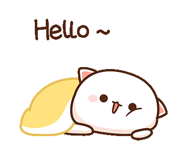
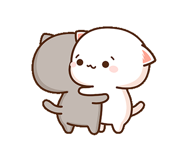
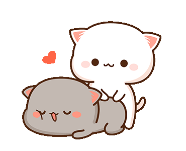
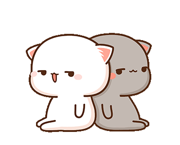
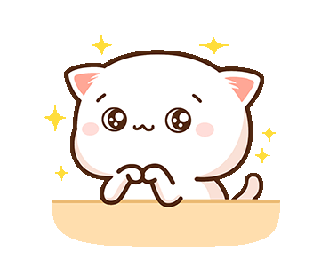
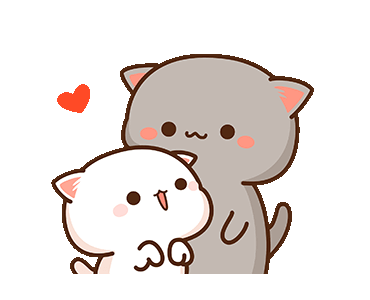

LỜI NHẮN NHỦ NHO NHỎ

Một năm trôi qua nhanh ghê ha.
Chúc mừng ngày kỷ niệm một năm bên nhau của tụi mình!
Suốt một năm qua, tụi mình đã cùng nhau trải qua nhiều chuyện vui có mà buồn cũng có. Có thương nhau nhiều và cũng có cãi nhau nhiều. Nhờ vậy mà thông qua đó tụi mình có thể hiểu nhau nhiều hơn.
Cảm ơn Bình vì những điều mà Bình đã làm cho Ngân, đã yêu thương Ngân, chịu đựng tính khí mưa nắng thất thường của Ngân trong suốt một năm qua.
Cảm ơn chúng ta vì sau những lần cãi vã vẫn nắm tay nhau.

Em bé của Ngân suốt thời gian qua cũng đã trải qua nhiều vất vả, cực khổ và những điều không như mong muốn rồi. Nhưng sau tất cả, Bình vẫn vượt qua được. Em bé của Ngân là giỏi nhất!

Ngân thương em bé Bình nhiều lắm.
Bình là động lực cho Ngân cố gắng mỗi ngày để có thể phát triển bản thân thật nhanh để còn mau mau đi làm công ty kiếm thiệt nhiều nhiều tiền về cho Bình và cho tương lai của chúng mình.

Ngân biết em bé của Ngân cũng đang rất lo sợ tương lai khi Ngân đi làm, được tiếp xúc với nhiều người hơn sẽ thay đổi.
Nhưng Bình ơi, dù cho cuộc đời vùi dập mình thế nào, xã hội có thay đổi ra sao thì có một điều mà Ngân dám khẳng định là Ngân sẽ không bao giờ phản bội Bình.
Ngân không dám hứa với Bình trong tương lai tính cách của Ngân sẽ không thay đổi, nhưng Ngân hứa rằng Ngân sẽ cố gắng thay đổi theo hướng tích cực nhất có thể. Ngân sẽ cố học cách điều chỉnh cảm xúc của bản thân hơn, học cách thể hiện tình yêu thương với Bình nhiều hơn, sẽ học cách quan sát, cách quan tâm chăm sóc và nhiều nhiều thứ khác.

Bởi vì Ngân còn rất nhiều thứ muốn được làm với Bình. Ngân muốn được nắm tay Bình đi du lịch thật nhiều thật nhiều, khám phá thật nhiều điều về thế giới này mà mỗi ngày Ngân vẫn thường đọc trên wiki. Muốn được sống cùng Bình ở ngôi nhà được thiết kế bởi chính chúng ta. Muốn được làm những điều mà Bình muốn, Bình thích. Muốn được nghe Bình kêu vợ mỗi ngày và nhiều nhiều điều khác nữa.
Vậy nên những ngày tiếp theo hãy chăm sóc lẫn nhau và bên nhau thật lâu thật lâu nha!

I'm so luckly, I found you